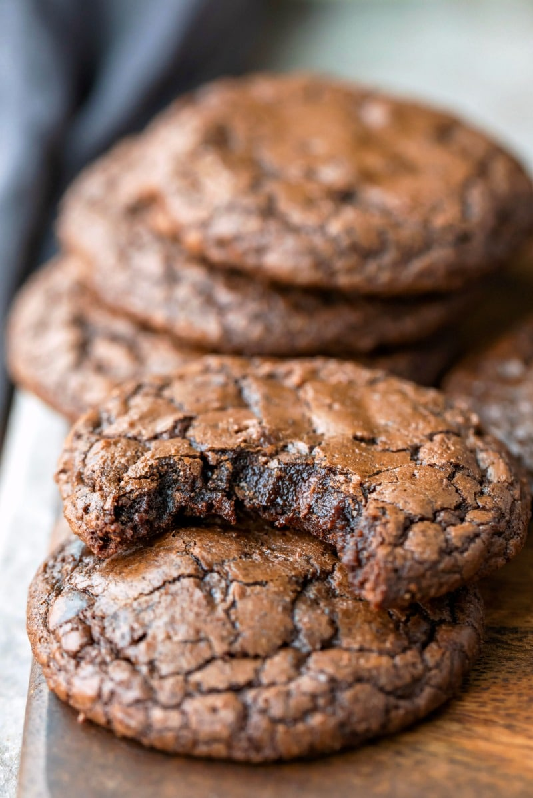

Brownie Cookies

Description
Friends! Let me introduce you to BROWNIE COOKIES! These are everything we love about a brownie:
rich, chewy, fudgy goodness, in cookie form. I have rationalized that cookies are a casual and
simple “anytime” dessert, which means there is absolutely no reason why we shouldn’t drop what
we’re doing and make these Brownie Cookies right this very second. Who’s with me?
Ingredients
- 3/4 cup all purpose flour
- 3/4 teaspoon
- 1/2 teaspoon
- 1 teaspoon espresso powder, optional
- 1/3 cup unsweetened cocoa powder
- 1 1/2 cups semisweet or bittersweet chocolate chips*, divided
- 5 tablespoons unsalted butter, cut into pieces
- 2 large eggs
- 1 large egg yolk
- 1 tablespoon canola or vegetable oil
- 1 cup granulated sugar
- 1 1/2 teaspoons vanilla extract
- aditional chocolate chips and flaky sea salt for topping the cookies, optional
Instructions
- Preheat oven to 350°F with racks in the upper third and lower third of the oven. Line two baking sheets with parchment paper.
- Combine flour, baking powder, salt, espresso powder, and cocoa powder. Set aside.
- In a small saucepan over medium-low heat, heat butter and 1 cup chocolate chips, stirring frequently, until melted. Remove from the heat and set aside to cool for a few minutes while you proceed with the recipe.
- In a stand mixer fitted with the paddle attachment, beat eggs, egg yolk, oil, sugar, and vanilla on high speed for 3 minutes, until pale yellow and creamy. Reduce the mixer to low and slowly pour in the melted butter/chocolate while mixing. Scrape the sides and bottom of the bowl as needed. Add the flour mixture and beat until fully combined. Stir in ½ cup chocolate chips. Let the cookie dough sit at room temperature for 10 minutes**.
- Using a 1 ½ tablespoons cookie scoop (or two spoons), scoop the dough and place it on the prepared baking sheets about 2 inches apart. The dough will seem fairly thin, thicker than brownie batter but thinner than typical cookie dough. If desired, press a few additional chocolate chips on top of each dough mound. Lightly flatten the dough mound (just a bit!) to encourage spreading.
- Bake for 9-11 minutes until the cookies have spread, the edges are beginning to set but the center is still underbaked. They will firm up after cooling. Place the baking sheets on wire racks and cool completely. If desired, you can sprinkle the tops of the cookies with flaky sea salt right after removing them from the oven.
Home